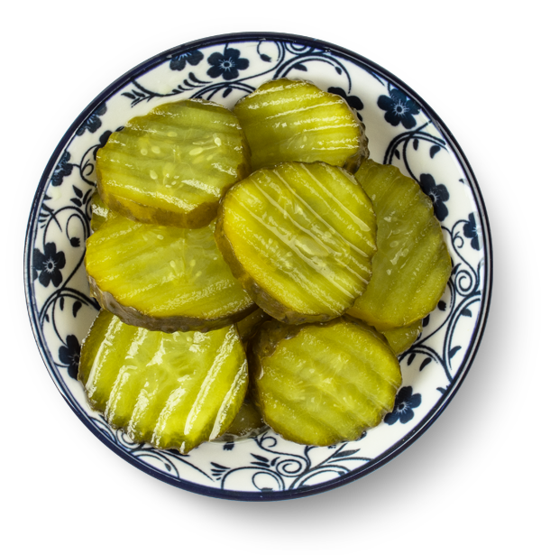
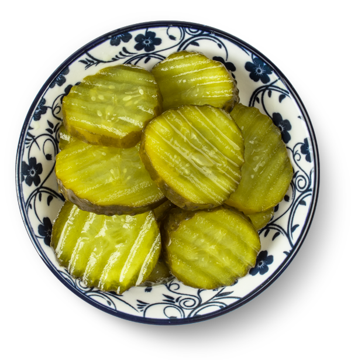

# Tijd voor een feestje?
Hap slik weg!
Een schaaltje met augurken of augurkenplakjes doet het perfect op een feestje. Lekker bij de borrel, maar je kunt er veel meer mee. Bijvoorbeeld lekkere Parmaham uit Sardinie erom en prikkertje erin. Klaar!
We hebben ze in plakjes, stukjes, sticks en andere 'uitvoeringen'. Je kunt het zo gek niet bedenken! De meeste mensen vinden zoetzuur het lekkerst. Maar wist je dat er ook nog andere opgiet is? Bovendien hebben we producten geschikt voor mensen met speciale diëten. Je kunt ze allemaal hier ontdekken.
Een schaaltje met augurken of augurkenplakjes doet het perfect op een feestje. Lekker bij de borrel, maar je kunt er veel meer mee. Bijvoorbeeld lekkere Parmaham uit Sardinie erom en prikkertje erin. Klaar!
Augurken zijn geliefd bij iedereen. Dagelijks krijgen we berichtjes hoe lekker mensen augurken vinden. Een zure bom bij de haringkar of dat lekkere plakje op je hamburger!
Nicolle (24 jaar / aanstaande moeder)
De cornichon, het kleine knapperige broertje van de augurk, is onze culinaire verrassing in miniformaat. Met zijn friszure smaak en knapperige beet vormt het de perfecte tegenhanger voor rijke vleeswaren en kazen. Dit bescheiden tafelzuur verdient een plekje op elke borrelplank, vinden we! En dan mag je er best een joekel van een vlaggetje in zetten ;-).
Ontdek hieronder enkele variaties. Als je op deze link klikt, zie ons gehele assortiment.